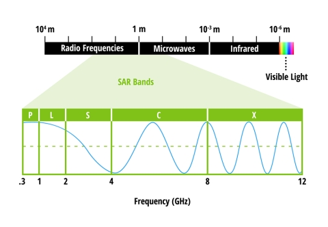
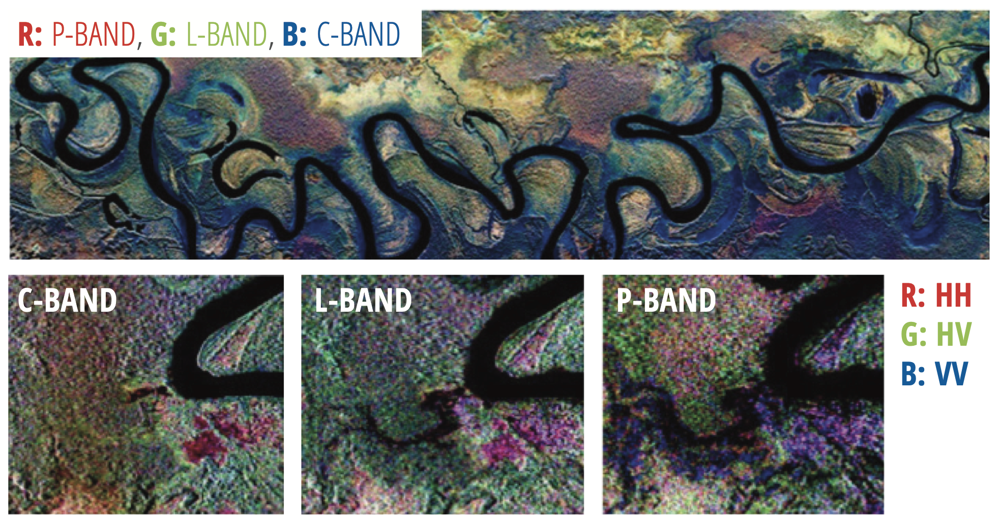
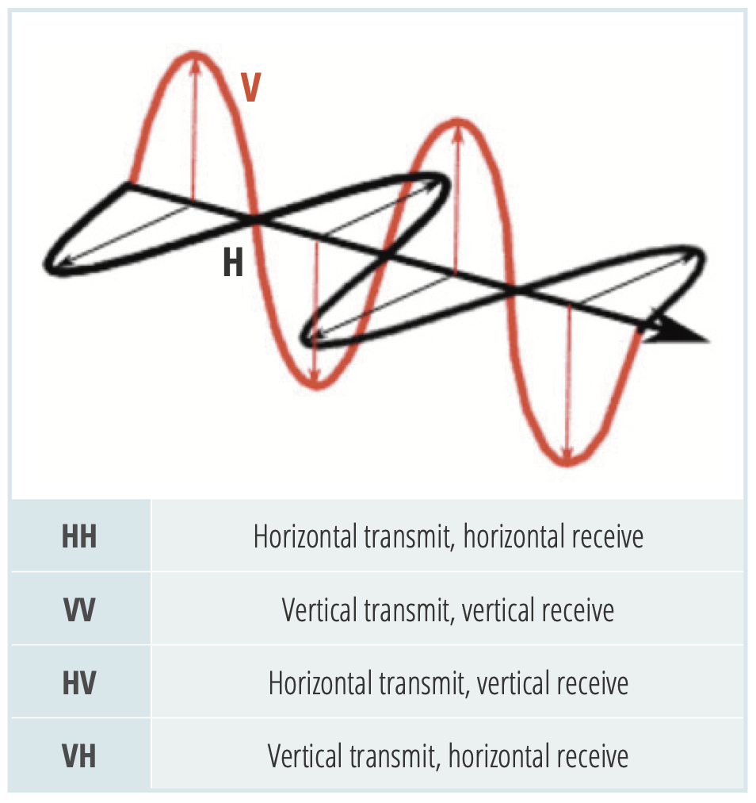

| Band | Frequency | Wavelength | Typical.Application |
|---|---|---|---|
| Ka | 27–40 GHz | 1.1–0.8 cm | Rarely used for SAR (airport surveillance) |
| K | 18–27 GHz | 1.7–1.1 cm | rarely used (H2O absorption) |
| Ku | 12–18 GHz | 2.4–1.7 cm | rarely used for SAR (satellite altimetry) |
| X | 8–12 GHz | 3.8–2.4 cm | High resolution SAR (urban monitoring,; ice and snow, little penetration into vegetation cover; fast coherence decay in vegetated areas) |
| C | 4–8 GHz | 7.5–3.8 cm | SAR Workhorse (global mapping; change detection; monitoring of areas with low to moderate penetration; higher coherence); ice, ocean maritime navigation |
| S | 2–4 GHz | 15–7.5 cm | Little but increasing use for SAR-based Earth observation; agriculture monitoring (NISAR will carry an S-band channel; expends C-band applications to higher vegetation density) |
| L | 1–2 GHz | 30–15 cm | Medium resolution SAR (geophysical monitoring; biomass and vegetation mapping; high penetration, InSAR) |
| P | 0.3–1 GHz | 100–30 cm | Biomass. First p-band spaceborne SAR will be launched ~2020; vegetation mapping and assessment. Experimental SAR. |
4 Marco Conceptual
4.1 Introduction
Aunque la mayoría de los científicos que utilizan la teledetección están familiarizados con las imágenes ópticas pasivas del Landsat del Servicio Geológico de Estados Unidos, el espectrorradiómetro de imágenes de resolución moderada (MODIS) de la NASA y el Sentinel-2 de la Agencia Espacial Europea, como por ejemplo, hay otro tipo de datos de teledetección que está llamando la atención: El radar de apertura sintética o SAR. El SAR es un tipo de adquisición de datos activa en la que un sensor produce su propia energía y registra la cantidad de energía reflejada tras interactuar con la Tierra. Mientras que las imágenes ópticas son similares a la interpretación de una fotografía, los datos SAR requieren una forma diferente de pensar, ya que la señal responde a las características de la superficie, como la estructura y la humedad.
4.2 Radar de Apertura Sintética:
La resolución espacial de los datos de radar está directamente relacionada con la relación entre la longitud de onda del sensor y la longitud de la antena del sensor. Para una longitud de onda dada, cuanto más larga sea la antena, mayor será la resolución espacial. Desde un satélite en el espacio que opera a una longitud de onda de unos 5 cm (radar de banda C), para obtener una resolución espacial de 10 m, se necesitaría una antena de radar de unos 4.250 m de longitud.
Una antena de ese tamaño no es práctica para un sensor de satélite en el espacio. Por eso, científicos e ingenieros han ideado una ingeniosa solución: la apertura sintética. En este concepto, una secuencia de adquisiciones de una antena más corta se combinan para simular una antena mucho mayor, proporcionando así datos de mayor resolución (Figure 4.1)

4.3 Frecuencia y longitud de onda
Los sensores ópticos, como el Operational Land Imager (OLI) de Landsat y el Multispectral Instrument (MSI) de Sentinel-2, recogen datos en las porciones visible, infrarroja cercana e infrarroja de onda corta del espectro electromagnético. Los sensores de radar utilizan longitudes de onda más largas a escala de centímetros a metros, lo que les confiere propiedades especiales, como la capacidad de ver a través de las nubes (Figure 4.2).

Las diferentes longitudes de onda del SAR suelen denominarse bandas, con designaciones de letras como X, C, L y P. En la tabla siguiente se indica la banda con la frecuencia asociada, la longitud de onda y la aplicación típica para esa banda.

La longitud de onda es una característica importante a tener en cuenta cuando se trabaja con SAR, ya que determina cómo interactúa la señal del radar con la superficie y hasta dónde puede penetrar una señal en un medio. Por ejemplo, un radar de banda X, que funciona a una longitud de onda de unos 3 cm, tiene muy poca capacidad para penetrar en el bosque de hoja ancha, por lo que interactúa principalmente con las hojas de la parte superior de la copa de los árboles. En cambio, una señal de banda L tiene una longitud de onda de unos 23 cm, con lo que consigue una mayor penetración en el bosque y permite una mayor interacción entre la señal del radar y las grandes ramas y troncos de los árboles. La longitud de onda no sólo influye en la profundidad de penetración en los bosques, sino también en otros tipos de cobertura terrestre, como el suelo y el hielo.
Por ejemplo, científicos y arqueólogos están utilizando datos SAR para ayudar a “descubrir” ciudades perdidas e infraestructuras de tipo urbano ocultas a lo largo del tiempo por la densa vegetación o las arenas del desierto. Para más información sobre el uso del SAR en arqueología espacial, véanse las publicaciones del Observatorio de la Tierra de la NASA Peering through the Sands of Time y Secrets beneath the Sand.
4.4 Mecanismos de polarización y dispersión
El radar también puede recoger señales en diferentes polarizaciones, controlando la polarización analizada tanto en el trayecto de transmisión como en el de recepción. La polarización se refiere a la orientación del plano en el que oscila la onda electromagnética transmitida. Aunque la orientación puede producirse en cualquier ángulo, los sensores SAR suelen transmitir con polarización lineal. La polarización horizontal se indica con la letra H, y la vertical con la V.
La ventaja de los sensores de radar es que la polarización de la señal puede controlarse con precisión tanto en la transmisión como en la recepción. Las señales emitidas en polarización vertical (V) y recibidas en polarización horizontal (H) se indicarían con una VH. Alternativamente, una señal emitida en horizontal (H) y recibida en horizontal (H) se indicaría con HH, y así sucesivamente (Figure 4.3).

Examinando la intensidad de la señal de estas polarizaciones diferentes aporta información sobre la estructura de la superficie de la imagen, basada en los siguientes tipos de dispersión: superficie rugosa, volumen y doble rebote (Figure 4.4).

- La dispersión de la superficie rugosa, como la causada por el suelo desnudo o el agua, es más sensible a la dispersión VV.
- La dispersión de volumen, por ejemplo, causada por las hojas y ramas de un bosque, es más sensible a datos de polarización cruzada como VH o HV.
- El último tipo de dispersión, el doble rebote, está causado por edificios, troncos de árboles o vegetación inundada y es más sensible a una señal polarizada HH.
Es importante señalar que la cantidad de señal atribuida a los diferentes tipos de dispersión puede cambiar en función de la longitud de onda, ya que ésta modifica la profundidad de penetración de la señal. Por ejemplo, una señal de banda C sólo penetra en las capas superiores del dosel de un bosque y, por lo tanto, experimentará principalmente dispersión de rugosidad mezclada con una cantidad limitada de dispersión de volumen. Sin embargo, una señal de banda L o de banda P tendrá una penetración mucho más profunda y, por lo tanto, experimentará una dispersión de volumen fuertemente aumentada, así como cantidades crecientes de dispersión de doble rebote causada por el tronco del árbol (Figure 4.5).

4.5 Interferometría
Los datos SAR también pueden permitir un método de análisis denominado interferometría o InSAR. InSAR utiliza la información de fase registrada por el sensor para medir la distancia del sensor al objetivo. Cuando se realizan al menos dos observaciones del mismo objetivo, la distancia, con información geométrica adicional del sensor, puede utilizarse para medir los cambios en la topografía de la superficie terrestre. Estas mediciones son muy precisas (hasta el nivel de centímetros) y pueden utilizarse para identificar zonas de deformación debidas a fenómenos como erupciones volcánicas y terremotos.

Una señal SAR contiene información de amplitud y fase. La amplitud es la fuerza de la respuesta del radar y la fase es la fracción de un ciclo completo de onda sinusoidal (una sola longitud de onda SAR). La fase de la imagen SAR viene determinada principalmente por la distancia entre la antena del satélite y los objetivos terrestres.
El SAR interferométrico (InSAR) explota la diferencia de fase entre dos observaciones SAR radar complejas de la misma zona, tomadas desde posiciones de sensor ligeramente diferentes, y extrae información de distancia sobre el terreno terrestre.
Combinando la fase de estas dos imágenes tras el coregistro, se puede generar un interferograma en el que la fase está altamente correlacionada con la topografía del terreno y se pueden cartografiar los patrones de deformación. Si se elimina de los interferogramas el desplazamiento de fase relacionado con la topografía, la diferencia entre los productos resultantes mostrará los patrones de deformación de la superficie ocurridos entre las dos fechas de adquisición. Esta metodología se denomina interferometría diferencial (DInSAR).